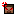
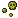
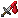
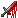
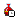

Effects
An effect (also known as mob effect or status effect) is a helpful, harmful or a mostly useless condition that affects an entity. Effects can be inflicted in various ways throughout the game, including consuming potions and some food items, being in the range of beacons and conduits, and being attacked by or close to certain mobs.
| Icon | Name | Effect |
|---|---|---|
|  | Rage | Increase damage dealt by 10% (+5% * level) and movement speed by 2% (+2% * level) |
| Antidote | Remove all negative effects over time | |
|  | Lethal Poison | Deadly version of poison, can kill even having 1% below health |
|
|
Bleed | |
| Wings | Allow to fly and ignore fall damage | |
| Frostbite | Deal 1 damage per seconds and stop entity's movements | |
| Thorns | Reflect (25% damage dealt * level) to attacker | |
| Curse Flame | Burn entity dealing (1% max health * level) damage per second, can't extinguish by water | |
| Fear | Distorted the entity's movements and if player they cant able to sleep | |
| Iron Skin | Increase Armor and Armor Toughness by 15% per level | |
| Immunity | Ignore incoming damage, after ignoring the effect will depleted | |
| Recovery | Restore 1% max health, considered as the upgraded version of regeneration effect | |
| Paralyze | Disable entity's movement and if player they cant use any items | |
|  | Leech | Gain 5% * level Lifesteal |
| Hunger Boost |
Gain Two States: Hunting State and Killer Instinct State - Hunting State: Allow to see entity with 16x16 - Killer Instinct: When target health are less than user's health it gave Vulnerable 1 effect for whole duration |
|
|  | Vulnerable | Increase damage taken by 10% * level |
|  | Healing Sickness | Unable to heal using any healing potion item |
| Stun | Unable to move, use, attack, and mine over time | |
| Lightning | After slight delay summon lightning bolt dealing 4 + (1 * per level) within 1 * level range | |
| Armor Break | Reduce Armor and Armor Toughness by 15% per level | |
| Dragon Flame | Burn dealing 1 damage per seconds, Water cant extinguish and deal additional 2 damage per seconds | |
| Nature Heal | Increase Health Regeneration by 15% per level |